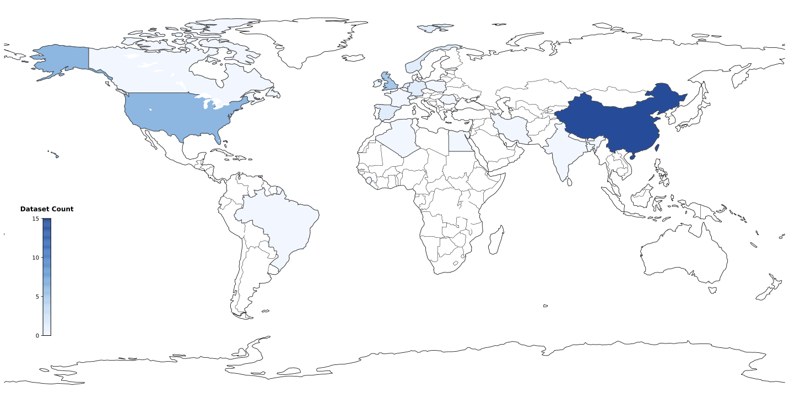

The inherent safety and versatility of ultrasound imaging have made it widely accessible in modern clinical settings for disease diagnosis and health management. Artificial intelligence (AI) that can effectively learn ultrasound representations by integrating multi-source data hold significant promise for advancing clinical care. However, the scarcity of large labeled datasets in real-world clinical environments and the limited generalizability of task-specific models have hindered the development of generalizable clinical AI models for ultrasound applications. In this study, we present EchoCare, a novel ultrasound foundation model for generalist clinical use, developed via self-supervised learning on our curated, publicly available, large-scale unlabeled dataset--EchoCareData--comprising 3,814,647 ultrasound images from multi-center, multi-device, multi-modality, and multi-ethnic global sources. Unlike prior studies that adopt off-the-shelf vision foundation model architectures, we introduce a hierarchical classifier into EchoCare to enable joint learning of pixel-level and representation-level features, capturing both global anatomical contexts and local ultrasound characteristics. With minimal or no further training, EchoCare outperforms state-of-the-art comparison models across 10 representative downstream ultrasound benchmarks of varying diagnostic difficulties, spanning lesion segmentation, disease diagnosis, one-shot recognition, and quantitative regression. By reducing dependence on laborious expert annotations and domain-specific knowledge, EchoCare provides a generalizable framework to boost the translation of AI technologies for diverse clinical ultrasound applications.
EchoCareData integrates multi-center, multi-region, and multi-device sources, covering 23 hospitals across 5 continents and 20 countries, ensuring diversity in clinical practices, patient demographics, and imaging equipment.
Hospitals Worldwide
Ultrasound Devices
Continents
Countries/Regions

We evaluated EchoCare on two benchmark datasets for organ segmentation: the DDTI dataset for thyroid node segmentation and the Mus-V dataset for arterial-venous vessel segmentation.
Pancreas
Liver
Colon
Lung
A
B
C
D
We evaluated EchoCare on the low-quality ultrasound image enhancement task using the USenhance benchmark dataset25, which encompasses real-world clinical scans from 109 patients across five anatomical regions: thyroid, kidney, liver, breast, and carotid artery.